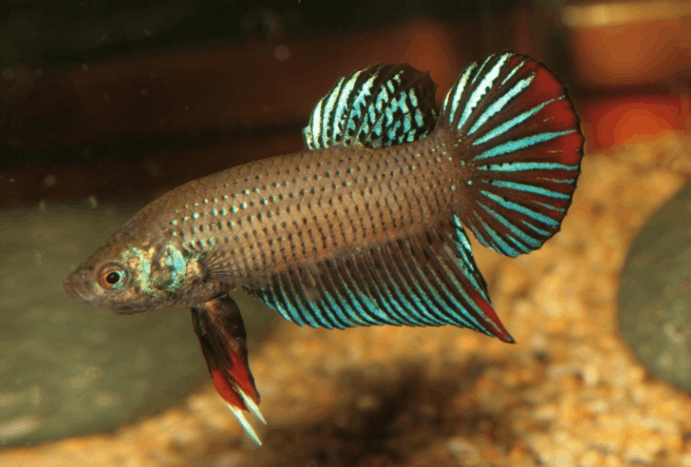

Systématique
- Ordre : Anabantiformes
- Famille : Osphronemidae
- Genre : Betta
- Espèce : B. imbellis
- Groupe : Complexe splendens

Betta imbellis, le combattant paisible, est une espèce labyrinthidé d'Asie du Sud-Est beaucoup moins agressive que le célèbre combattant du Siam, d'où son épithète spécifique « imbellis » (inoffensif, doux). Elle appartient au complexe splendens, groupe d'espèces très voisines partageant de nombreux traits morphologiques.
Le mâle atteint 6 à 7 cm, tandis que la femelle mesure 4,5 à 5 cm. Le corps est fusiforme, légèrement comprimé latéralement, avec une tête petite et conique. Les yeux sont grands et mobiles avec un iris irisé bleu-vert. La nageoire caudale est caractéristiquement arrondie à croissant, très différente de la caudale lancéolée du combattant du Siam.
La coloration de base est vert-métallique à gris-bleu avec un éclat irisé intense. Le mâle arbore des barres verticales noires, particulièrement visibles lors du combat, les nageoires dorsales et anales sont orangées à rougeâtres striées de noir. Des sélections ornementales ont produit des formes rouge solide, bleu solide, jaune, noir (melano), blanc (platinum) et d'autres morphes colorés. La femelle est généralement plus terne, gris-vert clair, sans les teintes rouges du mâle.
Contrairement à Betta splendens, Betta imbellis peut être maintenu en groupe pacifique avec un ratio mâle/femelle équilibré (1 mâle dominant pour 2–3 femelles). Les mâles montrent une agressivité réduite et généralement tolèrent la présence les uns des autres à condition qu'une abondante végétation offre des territoires distincts. Un seul mâle domine et arbore ses plus belles couleurs tandis que les autres restent discrets et non colorés.
L'espèce est diurne, active le jour, se reposant sur le substrat la nuit. Elle occupe principalement les zones médiane et supérieure, se tenant souvent sous les plantes flottantes. L'espèce possède un labyrinthe, lui permettant de respirer l'air atmosphérique et lui conférant une grande adaptabilité aux eaux peu oxygénées. Elle peut sauter hors de l'eau et demande un aquarium couvert. Une décoration très plantée avec zones ombragées est essentielle au bien-être de cette espèce timide.
Mode : ovipare avec construction de nid de bulles; le mâle construit un nid volumineux (6–8 cm de diamètre) rassemblant de petites bulles d'air liées par sa salive, généralement situé sous une feuille large, dans la végétation flottante ou parfois adossé à la paroi de l'aquarium.
Une parade nuptiale rapide précède l'accouplement. Le mâle danse sous son nid et la femelle s'approche progressivement. L'enlacement reproducteur dure quelques secondes, le mâle s'enroulant autour de la femelle qui se laisse coincer au niveau des flancs. Les deux corps vibrent et les œufs s'écoulent lentement de la femelle. Le mâle les récupère rapidement avant qu'ils ne touchent le fond et les crache dans le nid. Ce processus se répète durant 1 à 2 heures, émettant généralement 25 à 50 œufs.
L'éclosion intervient après 24 à 36 heures à 26–28 °C. Le mâle garde jalousement le nid et les alevins, soufflant des bulles pour renforcer sa structure et replacer les jeunes qui tombent. Les alevins absorbent leur sac vitellin en 3 à 4 jours, puis deviennent libres. Le développement du labyrinthe intervient vers 3–4 semaines; à ce stade, la surface de l'eau doit rester bien humide (pas de courant d'air direct) pour que les jeunes puissent respirer un air chaud et humide.
Dimorphisme sexuel : très marqué; le mâle est plus grand et franchement plus coloré que la femelle, avec des nageoires dorsales et caudales plus développées. La femelle est plus petite, terne gris-vert, et affiche à maturité une papille génitale blanche nette visible à l'avant de la nageoire anale. Lors de la parade, la femelle arbore des barres verticales sombres transversales sur les flancs, signal de réceptivité.
Espérance de vie : environ 2 à 3 ans en captivité en conditions optimales, bien que certains spécimens en bac planté soigneusement maîtrisé dépassent occasionnellement 4–5 ans.
Betta imbellis fréquente les eaux stagnantes ou à très faible courant des rizières, marécages, fossés en bordure de route, ruisseaux lents et étangs des zones côtières du sud de la Thaïlande péninsulaire et de la Malaisie, ainsi que du nord de Sumatra. Ces habitats affichent une forte végétation submergée, marginale ou en canopée, créant un environnement très ombragé. Le taux d'oxygène dissous est souvent très faible, surtout en période sèche lorsque les habitats se réduisent à des petits trous d'eau où l'espèce survit en respirant l'air atmosphérique.
L'eau est douce à moyennement dure, très acide à légèrement alcaline selon la saison et les apports monssunaux. Pendant les fortes pluies, les flux changent la composition chimique de l'eau rapidement. L'habitat affiche une accumulation importante de matière organique en décomposition (feuilles, branches mortes, racines), créant un environnement très minéralisé en tannins.
Répartition

Origine naturelle :
- Thaïlande méridionale (péninsule), Malaisie péninsulaire et nord de Sumatra, Indonésie.
- Localité type : zones humides autour de Kuala Lumpur, Malaisie.
- Introduction accidentelle à Singapour et dans d'autres régions avec établissement de populations sauvages.
- Hybridation possible et documentée avec B. splendens dans les régions où ce dernier a été introduit, avec impacts génétiques sur les populations sauvages.
L'espèce demeure plus rare en aquariophilie commerciale que B. splendens mais gagne en popularité chez les éleveurs spécialisés. Très peu de collecte à l'état sauvage; majorité des stocks en captivité depuis plusieurs générations.
Paramètres de maintenance
Température : 20 à 29 °C; maintien optimal 24–28 °C, avec 28–29 °C pour la reproduction.
pH : 5,0 à 7,5, préférablement 6,0 à 7,0 (légèrement acide); l'espèce tolère une variation saisonnière marquée.
GH : 1 à 12 °dGH, eau douce à moyennement dure; pas d'exigence stricte.
Courant : nul à très faible; eaux stagnantes obligatoires.
Volume conseillé : 40–50 L minimum pour un couple ou un petit groupe (1M + 2–3F); 96 L minimum pour un bac communautaire régional. Très planté, lumière tamisée, nombreux refuges.
Régime alimentaire
Régime : insectivore carnivore; se nourrit d'invertébrés aquatiques et terrestres tombés à la surface en nature.
En aquarium, accepte flocons fins, granulés, nourritures congelées (daphnies, artémias, vers de vase, larves de moustiques) et nourriture vivante. Proies vivantes fortement recommandées pour optimiser les couleurs, particulièrement avant la reproduction.
Distribution 1 à 2 fois par jour en petites quantités; attention à l'obésité, risque important chez cette espèce. Jeûne occasionnel (1 jour par semaine) est bénéfique. Alimentation variée maintient la santé et la vivacité de l'espèce.